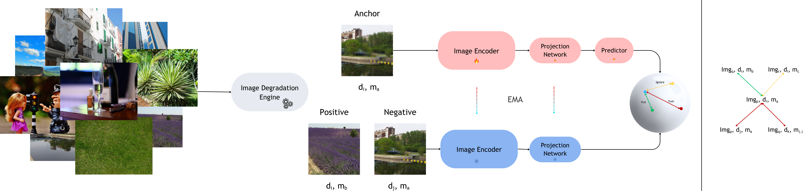
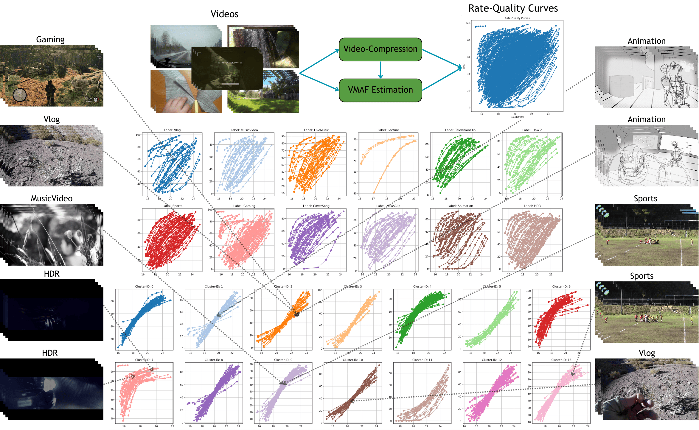
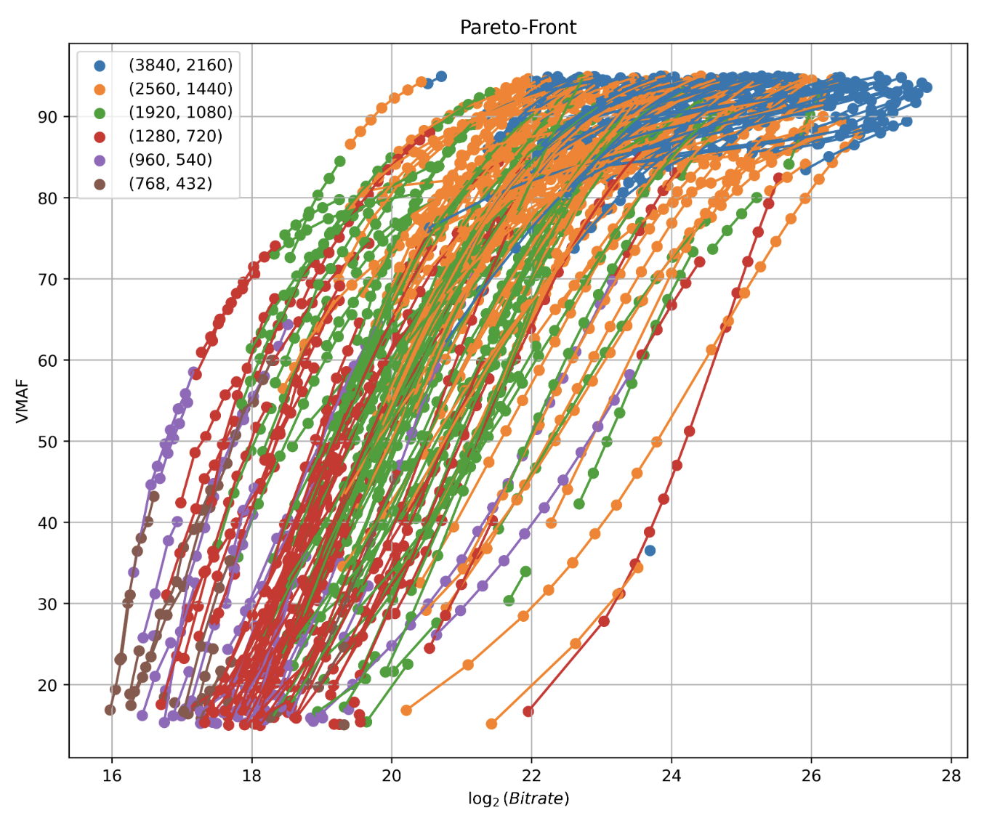

High-Fidelity Image Generation using Self-Supervised Learning
Developing a Representation Alignment framework to improve the visual fidelity and structural consistency of generative image models.
In Progress
I am a fourth-year Ph.D. student at Laboratory of Image and Video Engineering, The University of Texas at Austin, advised by Prof. Alan Bovik. As part of my research, I collaborate with Meta Video Infrastructure Team on Video Engineering and Perceptual Quality Optimization.
My research leverages self-supervised learning to bridge the gap between computational metrics and human-aligned visual perception. I specialize in developing robust, alignment-focused models for perceptual quality assessment, high-fidelity and high-resolution image generation, and the optimization of large-scale media delivery systems.

Developing a Representation Alignment framework to improve the visual fidelity and structural consistency of generative image models.




